건설재료시험기사 (2008-05-11 기출문제)
1과목: 콘크리트공학
1. S-N 곡선은 콘크리트의 어떤 성질을 나타내는 데 사용되는가?
- 피로
- 부착강도
- 크리프
- 충격강도
(정답률: 알수없음)

2. 프리스트레스트 콘크리트에 대한 설명으로 틀린 것은?
- 굵은 골재의 최대치수는 보통의 경우 40mm를 표준으로 한다. 그러나 부재치수, 철근간격, 펌프압송 등의 사정에 따라 25mm를 사용할 수도 있다.
- PSC그라우트에 사용하는 혼화제는 블리딩 발생이 없는 타입의 사용을 표준으로 한다.
- 프리스트레싱할 때의 콘크리트 압축강도는 프텐션방식으로 시공할 경우 30MPa이상이어야 한다.
- 서중 시공의 경우에는 지연제를 겸한 감수제를 사용하여 그라우트 온도의 상승이나 그라우트가 급결되지 않도록 하여야 한다.
(정답률: 알수없음)
3. 콘크리트 휨강도 시험에서 공시체가 지간의 3등분 중앙부에서 파괴되고 최대하중이 35Nk 이었을 때 휨강도는 얼마인가? (단, 공시체의 크기는 150×150×530mm이고, 지간은 450mm이다.)
- 1.7MPa
- 4.7MPa
- 5.5MPa
- 6.5MPa
(정답률: 알수없음)
4. 다음 중 콘크리트의 작업성(woekavbility)을 증진시키기 위한 방법으로서 적당하지 않은 것은?
- 일정한 슬럼프의 범위에서 시멘트량을 줄인다.
- 일반적으로 콘크리트 반죽의 온도상승을 막아야 한다.
- 입도나 입형이 좋은 골재를 사용한다.
- 혼화재료로서 AE제나 분산제를 사용한다.
(정답률: 알수없음)
5. 일반적인 수중콘크리트의 재료 및 시공상의 주의사항을 바르게 기술한 것은?
- 수중 시공시의 강도가 표준공시체 강도의 0.6~0.8배가 되도록 배합강도를 설정하여야 한다.
- 물의 흐름을 막은 정수중에는 콘크리트를 수중에 낙하 시킬 수 있다.
- 물-시멘트비는 40% 이하, 단위시멘트량은 300kg/m3이상을 표준으로 한다.
- 트레미를 사용하여 콘크리트를 칠 경우 콘크리트를 치는 동안 일정한 속도로 수평이동시켜야 한다.
(정답률: 알수없음)
6. 직경이 100mm이고 높이가 200mm인 원주형 콘크리트 공시체를 할렬(쪼갬)시험한 결과 최대 강도가 62.8kN이었다. 이 공시체의 인장강도는 얼마인가?
- 6.3MPa
- 3.1MPa
- 8.0MPa
- 2.0MPa
(정답률: 알수없음)
7. 그림과 같이 양단이 구속된 큰크리트보에 건조수축 변형률 ε=sh=0.00015 만큼 발생할 경우 콘크리트에 생기는 인장응력은? (단, 콘크리트의 탄성계수, Ec=2.1×104 MPa 이다.)
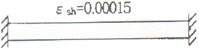
- 0 MPa
- 1.62 MPa
- 3.15 MPa
- 6.30 MPa
(정답률: 알수없음)
8. 콘크리트의 운반 및 타설에 관한 설명으로 잘못된 것은?
- 신속하게 운반하여 즉시 치고, 충분히 다져야 한다.
- 공사 개시 전에 운반, 타설 등에 관하여 미리 충분한 계획을 세워야 한다.
- 비비기로부터 타설이 끝날 때까지의 시간은 원칙적으로 외기온도가 25℃를 넘었을 때 1.0시간을 넘어서는 안된다.
- 운반 중에 재료분리가 일어났으면 충분히 다시 비벼서 균질한 상태로 콘크리트 타설을 하여야 한다.
(정답률: 알수없음)
9. AE콘크리트에서 공기량에 영향을 미치는 요인들에 대한 설명으로 잘못된 것은?
- 단위시멘트량이 증가할수록 공기량은 감소한다.
- 배합과 재료가 일정하면 슬럼프가 작을수록 공기량은 증가한다.
- 콘크리트의 온도가 낮을수록 공기량은 증가한다.
- 콘크리트가 응결ㆍ경화되면 공기량은 증가한다.
(정답률: 알수없음)
10. 콘크리트 양생에 관한 설명으로 옳은 것은?
- 강한 햇빛이나 바람의 영향을 받는 콘크리트 표면은 소성수축균열을 일으키지 않도록 양생한다.
- 초기재령시의 건조는 단기적으로는 강도발현을 저하시키지만, 장기적인 강도발현과 내구성에는 영향을 미치지 않는다.
- 고로시멘트나 플라이애쉬 시멘트를 이용하는 경우의 습윤양생기간은 보통포틀랜드 시멘트의 경우보다 짧게 한다.
- 콘크리트가 빙점하의 온도에만 노출되지 않으면 응결 및 경화에는 전혀 지장이 없다.
(정답률: 알수없음)
11. 다음 중 콘크리트의 시방배합을 현장배합으로 수정할 때 고려하여야 하는 것은?
- 슬럼프 값
- 골재의 표면수
- 골재의 마모
- 시멘트량
(정답률: 알수없음)
12. 시방배합을 통해 단위수량 174kg/m3. 시멘트량 369kg/m3, 잔골재 702kg/m3, 굵은골재 1.049kg/m3을 산출하였다. 현장골재의 입도를 고려하여 현장배합으로 수정한다면 잔골재와 굵은골재의 양은 각각 얼마가 되겠는가? (단, 현장골재의 입도는 잔골재 중 5mm체에 남는 양이 10%이고, 굵은골재 중 5mm체를 통과한 양이 5%이다.)
- 잔골재 : 563kg/m3, 굵은골재 : 1,188kg/m3
- 잔골재 : 637kg/m3, 굵은골재 : 1,114kg/m3
- 잔골재 : 723kg/m3, 굵은골재 : 1,028kg/m3
- 잔골재 : 802kg/m3, 굵은골재 : 949kg/m3
(정답률: 알수없음)
13. 매스콘크리트에서 균열유발줄눈의 간격은 얼마를 기준으로 하는가?
- 4~5m
- 5~8m
- 8~10m
- 10~75m
(정답률: 알수없음)
14. 콘크리트 재료 개량의 허용오차 중 옳지 않은 것은?
- 물 : 1%
- 골재 : 2%
- 혼화제 : 2%
- 혼화제 : 3%
(정답률: 알수없음)
15. 프리스트레스트콘크리트(PSC)와 철근콘크리트(RC)의 비교에 대한 설명으로 잘못돈 것은?
- PSC는 균열이 발생하지 않도록 설계도기 때문에 내구성 및 수밀성이 좋다.
- PSC는 RC에 비하여 고강도의 콘크리트와 강재를 사용하게 된다.
- PSC는 RC에 비하여 훨씬 탄성적이고 복원성이 크다.
- PSCs는 RC에 비하여 강성이 커서 변형이 작고, 진동에 강하다.
(정답률: 알수없음)
16. 콘크리트 구조물의 내구성을 향상시키기 위해 유의하여야 할 사항 중 옳지 않은 것은?
- 배합시 단위수량을 될 수 있는 한 적게 사용한다.
- 충분한 피복두께를 확보한다.
- 가능한 한 비중이 작은 골재를 사용한다.
- 콜드조인트를 만들지 않는다.
(정답률: 알수없음)
17. 일반 콘크리트의 비비기에 관하여 잘못 설명한 것은?
- 비비기를 시작하기 전에 미리 믹서내부를 모르타르로 부착시켜야 한다.
- 비비기는 미리 정해둔 비비기 시간의 3배 이상 계속해서는 안된다.
- 믹서안의 콘크리트를 전부 꺼낸 후에 다음 비비기 재료를 투입하여야 한다.
- 믹서안에 재료를 투입한 후의 비비기 시간은 가경식 믹서의 경우 3분 이상을 표준으로 한다.
(정답률: 알수없음)
18. 골재의 내구성시험 중 황산나트륨에 의한 안정성시험의 경우 조작을 5회 반복하였을 때 굵은골재의 손실질량백분율의 한도는 일반적으로 얼마로 하는가?
- 4%
- 7%
- 12%
- 15%
(정답률: 알수없음)
19. 프리팩트 콘크리트에 대한 설명 중 잘못된 것은?
- 프리팩트 콘크리트의 강도는 원칙적으로 재령 28일 또는 재령 91일의 압축강도를 기준으로 한다.
- 굵은 골재의 최소치수는 20mm 이상이어야 한다.
- 일반적으로 굵은 골재의 최대치수는 최소치수의 2~4배 정도가 좋다.
- 일반적으로 팽창률의 설정값은 시험 시작 후 3시간에서의 값이 5~10%인 것을 표준으로 한다.
(정답률: 알수없음)
20. 콘크리트의 배합에 대한 설명 중 옳지 않은 것은?
- 현장콘크리트의 품질변동을 고려하여 콘크리트의 설계기준강도를 배합강도보다 충분히 크게 정해야 한다.
- 콘크리트의 배합강도를 정할 때 사용하는 콘크리트 압축강도의 표준편차는 실제 사용한 콘크리트 30회 이상의 시험실적으로부터 결정하는 것을 원칙으로 한다.
- 콘크리트의 배합은 소요의 강도, 내구성, 수밀성, 균열저항성, 철근 또는 강재를 보호하는 성능을 갖도록 정해야 한다.
- 압축강도의 시험횟수가 15회인 경우에 그것으로 계산한 표준편차에 보정계수 1.16을 곱하여 콘크리트의 배합강도를 정할 때 사용하는 표준편차로 활용할 수 있다.
(정답률: 알수없음)
2과목: 건설시공 및 관리
21. 다음 각종 준설선에 대한 설명으로 틀린 것은?
- 그래브준설선은 버킷으로 해저의 토사를 굴착하여 적재하고 운반하는 준설선을 말한다.
- 디퍼준설선은 파쇄된 암석이나 발파된 암석의 준설에는 부적당하다.
- 펌프준설선은 사질해저의 대량준설과 매립을 동시에 시행할 수 있다.
- 쇄암선은 해저의 암반을 파쇄하는데 사용한다.
(정답률: 알수없음)
22. 특수제작된 거푸집을 이동시키면서 진행방향으로 슬래브를 타설하는 공법이며, 유압잭을 이용하여 전ㆍ후의 구동이 가능하며 main girder 및 form work를 상하좌우로 조절 가능한 기계화된 교량가설공법은?
- dywidag 공법
- ILM 공법
- MSS 공법
- FCM 공법
(정답률: 알수없음)
23. 흙의 성토작업에서 다음 그림의 쌓기 방법은?
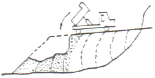
- 전방층 쌓기
- 수평층 쌓기
- 물다짐 공법
- 비계층 쌓기
(정답률: 알수없음)
24. 아스팔트계 포장에서 거북이동 모양의 균열(Alligator Cracking)이 발생하였다면 그 원인으로 볼 수 있는 것은?
- 아스팔트와 골재 사이의 접착이 불량하다.
- 아스팔트를 가열할 때 Overheat 하였다.
- 포장의 전압이 부족하다.
- 노반의 지지력이 부족하다.
(정답률: 알수없음)
25. 국내 도로 파손의 주요 원인은 소성변형으로 전체 파손의 큰 부분을 차지하고 있다. 최근 이러한 소성변형의 억제방법 중 하나로 기존의 밀입도 아스팔트 혼합물 대신 상대적으로 큰 입경의 골재를 이용하는 아스팔트 포장방법을 무엇이라 하는가?
- SBS
- SBR
- SMA
- SMR
(정답률: 알수없음)
26. 아래의 작업 조건하에서 백호로 굴착 상차작업을 하려고 할 때 시간당 작업량은 본바닥 토량으로 얼마인가?
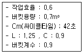
- 40.5m3/hr
- 29.2m3/hr
- 25.9m3/hr
- 23.3m3/hr
(정답률: 알수없음)
27. 댐의 그라우트(Grout)에 관한 기술 중 옳은 것은?
- 커튼 그라우트(curtain grout)는 기초암반의 변형성이나 강도를 개량하기 위하여 실시한다.
- 콘솔리데이션 그라우트(consolidation grout)는 기초암반의 지내력 등을 개량하기 위하여 실시한다.
- 콘택트 그라우트(contact grout)는 기초암반의 지내력등을 개량하기 위하여 실시한다.
- 림 그라우트(rim grout)는 콘크리트와 암반사이의 공극을 메우기 위하여 실시한다.
(정답률: 알수없음)
28. 현장 콘크리트 말뚝의 장점이 아닌 것은?
- 지층의 깊이에 따라 말뚝길이를 자유로이 조절할 수 있다.
- 말뚝선단에 구근을 만들어 지지력을 크게 할 수 있다.
- 말뚝재료의 운반에 제한이 적다.
- 현장 지반중에서 제작 양생됨으로 품질관리가 쉽다.
(정답률: 알수없음)
29. 토적곡선(Mass Curve)을 작성하는 주요 목적이 아닌 것은?
- 성토, 절토에 따른 토량의 배분
- 토량의 운반거리 산출
- 토취장 또는 사토장 선정
- 적합한 토공기계의 결정
(정답률: 알수없음)
30. 직접기초 굴착시 저면 중앙부에 섬과 같이 기초부를 먼저 구축하여 이것을 발판으로 주면부를 시공하는 방법을 무엇이라고 하는가?
- Open cut 공법
- Island 공법
- cut 공법
- Deep well 공법
(정답률: 알수없음)
31. 함수비가 큰 점토질 흙의 다짐에 가장 적합한 기계는?
- 로드 롤러
- 진동 롤러
- 탬핑 롤러
- 타이어 롤러
(정답률: 알수없음)
32. 흙댐(earth dam)에 관한 설명 중에서 잘못된 것은?
- 비교적 높은 댐의 축조가 가능하다.
- 기초지반이 비교적 견고하지 않아도 시공이 가능하다.
- 성토재료의 구입이 용이하며 경제적이다.
- 지진 등의 자연 재해에 비교적 취약하다.
(정답률: 알수없음)
33. 큰 중량의 중추를 높은 곳에서 낙하시켜 지반에 가해지는 충격에너지와 그 때의 진동에 의해 지반을 다지는 개량공법으로 대부분의 지반에 지하수위와 관계없이 시공이 가능하고 시공 중 사운딩을 실시하여 개량효과를 점검하는 시공법은?
- 지하연속벽공법
- 폭파다짐공법
- 바이브로플로테이션공법
- 동다짐공법
(정답률: 알수없음)
34. 성토사면의 토사속에 고분자합성수지로 된 특수섬유와 모래를 혼합시킨 특수보강재를 살포하여, 인공뿌리역할을 하도록 함으로써, 사면보호기능을 하는 공법은?
- 코어프레임공법
- 소일시멘트공법
- 택슬공법
- 지오그리드공법
(정답률: 알수없음)
35. 여굴(餘屈)을 줄이기 위한 조절발파 공법에 해당되지 않는 것은?
- Smooth Blasting 공법
- Bench Cut 공법
- Per-Splitting 공법
- Line-drillng 공법
(정답률: 알수없음)
36. 터널에서 인버트 아치를 필요로 하는 것은 다음의 어느 경우인가?
- 지질이 연약하고 나쁜 터널에서
- 경사가 큰 터널에서
- 복공 콘크리트 비용을 줄이기 위해서
- 용수가 많은 터널에서
(정답률: 알수없음)
37. 진동과 소음이 적어 공사에 적합하고 벤토아니트용 액을 사용하는 지하연속벽 공법 중 주열식(柱列式) 공법이 아닌 것은?
- BH공법
- RGP공법
- ONS공법
- ICOS공법
(정답률: 알수없음)
38. 베인시험(Vene test)은 다음 중 주로 어떤 지반의 전단저항을 직접 측정하는 시험인가?
- 지갈층
- 모래층
- 굳은 점토층
- 연약 점토층
(정답률: 알수없음)
39. 10,000m3(자연상태)의 사질토를 4m3의 덤프트럭으로 운반하려고 한다. 필요한 트럭의 대수는? (단, 사질토의 토량변화율 L=1.25, C=0.88)
- 3125대
- 2200대
- 2841대
- 2000대
(정답률: 알수없음)
40. 3점 견적법에 따른 적정공사일수는? (단, 낙관일수=5일, 정상일수=7일, 비관일수=15일)
- 6일
- 7일
- 8일
- 9일
(정답률: 알수없음)
3과목: 건설재료 및 시험
41. 중용열 포틀랜드 시멘트의 특성에 관한 설명으로 옳지 않은 것은?
- 수화열이 보통 포틀랜드 시멘트 보다 적다.
- 건조수축은 포틀랜드 시멘트 중에서 가장 적다.
- 화하저항성이 크고 내산성이 우수하다.
- 조기강도는 보통 포틀랜드 시멘트에 비해 크다.
(정답률: 알수없음)
42. 강(鋼)의 조직을 미세화하고 균질의 조직으로 만들며 강의 내부변형 및 응력을 제거하기 위하여 변태점 이상의 높은 온도로 가열한 후 대기 중에서 냉각시키는 열처리 방법은?
- 불림(normalizing)
- 풀림(annealing)
- 뜨임질(tempering)
- 담금질(quenching)
(정답률: 알수없음)
43. 암석은 그 성인(成因)에 따라 대별되는데 편마암, 대리석 등은 어느 암으로 분류되는가?
- 수성암
- 화성암
- 변성암
- 석회질암
(정답률: 알수없음)
44. 플라이애쉬를 사용한 콘크리트에 대한 설명 중 옳지 않은 것은?
- 워커빌리티가 좋아진다.
- 초기강도가 크고 장기강도는 다소 작다.
- 수화열이 작고 혼합량이 증가하면 응결이 지연된다.
- 수밀성 개선과 단위수량을 감소시킨다.
(정답률: 알수없음)
45. 응결 경화 촉진제로 사용하는 염화칼슘의 적당한 사용 양은?
- 시멘트량의 2% 이하
- 시멘트량의 3~5%
- 시멘트량의 4~6%
- 시멘트량의 7% 이상
(정답률: 알수없음)
46. 표면건조포화상태의 골재 1000g 공기 중에서 건조시켰더니 978g이 되었고, 이를 다시 절대건조상태로 건조시킨 결과 945g 되었다. 이 골재의 흡수율은 얼마인가?
- 5.8%
- 2.2%
- 2.3%
- 5.65%
(정답률: 알수없음)
47. 어떤 모래를 체가름 시험한 결과 다음 표를 얻었다. 이 때 모래의 조립률을 구하면?
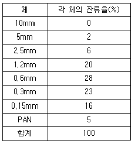
- 2.68
- 2.73
- 3.69
- 5.28
(정답률: 알수없음)
48. 다음 중 아스팔트의 침입도에 대한 설명으로 틀린 것은?
- 온도가 상승하면 침입도는 감소한다.
- 침입도지수란 온도에 대한 침입도의 변화를 나타내는 지수이다.
- 스트레이트 아스팔트가 블로운 아스팔트보다 침입도가 크다.
- 침입도는 아스팔트의 반죽질기를 물리적으로 타나내는 것이다.
(정답률: 알수없음)
49. 목재의 건조방법 중 인공건조법이 아닌 것은?
- 끓임법(자비법)
- 증기건조법
- 열기건조법
- 공기건조법
(정답률: 알수없음)
50. 다음 중 기폭약의 종류로 옳지 않은 것은?
- 니트로글리세린
- 뇌산수은
- 질화납
- D.D.N.P
(정답률: 알수없음)
51. 시멘트의 성분 중에 석고를 첨가하는 목적은?
- 강도 조절
- 흡수시간 조절
- 응결시간 조절
- 부착력 증가
(정답률: 알수없음)
52. 콘크리트에 사용되는 잔골재의 조립률로서 적당한 것은?
- 2.3~3.1
- 4.5~5.8
- 6.0~8.0
- 8.0~9.0
(정답률: 알수없음)
53. 도로의 표층공사에서 사용되는 가열아스팔트 혼합물의 안정도 시험은 어느 방법으로 판정하는가?
- 엥글러시험
- 레드우드시험
- 마샬시험
- 박막가열시험
(정답률: 알수없음)
54. 다음 콘크리트용 혼화재료에 관한 설명 중 틀린 것은?
- 플라이애쉬를 사용한 콘크리트의 경우 목표 공기량을 얻기 위해서는 플라이애쉬를 사용하지 않은 콘크리트에 비해 AE제의 사용량이 증가된다.
- 고로슬래그 미분말은 비결정질의 유리질 재료로 잠재수경성을 가지고 있으며, 유리화율이 높을수록 잠재수경성 반응은 커진다.
- 실리카퓸은 평균입경이 0.1μm 크기의 초미립자로 이루어진 비경절질 재료로 포졸란 반응을 한다.
- 팽창재를 사용한 콘크리트 팽창률 및 압축강도는 팽창재 혼입량이 증가되면 될수록 증가한다.
(정답률: 알수없음)
55. 다음 중 천연 아스팔트가 아닌 것은?
- 록 아스팔트
- 레이크 아스팔트
- 아스팔타이트
- 블로운 아스팔트
(정답률: 알수없음)
56. 포틀랜드 시멘트의 성질에 관한 다음 설명 중 틀린 것은?
- 규산 4석회가 많은 시멘트는 조기강도와 수화열이 커진다.
- 시멘트 응결시간은 풍화가 진행될수록 지연되며, 주변온도가 높을수록 빨라진다.
- 압축강도발현이 빠를수록 초기재령에 있어 수화열은 커진다.
- 시멘트의 비표면적이 클수록 초기강도는 작아진다.
(정답률: 알수없음)
57. 니트로글리세린을 20% 정도 함유하고 있으며 찐득한 엿형태의 것으로 폭약 중 폭발력이 가장 강하고 수중에서도 사용이 가능한 폭약은?
- 카알릿
- 함수폭약
- 니트로글리콜
- 교질다이너마이트
(정답률: 알수없음)
58. 다음 중 축합반응에 의하여 얻어지는 고분자 물질로 열경화성 수지가 아닌 것은?
- 페놀수지
- 요소수지
- 멜라민수지
- 폴리에틸렌수지
(정답률: 알수없음)
59. 다음 시멘트의 화학적 성분 중 주 성분이 아닌 것은?
- 석회(CaO)
- 실리카(SiO2)
- 산화 마그네슘(MgO)
- 알루미나(Al2O3)
(정답률: 알수없음)
60. 잔골재의 조립률 2.3, 굵은골재의 조립률 7.0을 사용하여 잔골재와 굵은골재를 1:1.5의 중량비율로 혼합하면 이때 혼합된 골재의 조립률은 얼마인가?
- 4.92
- 5.12
- 2.32
- 5.52
(정답률: 알수없음)
4과목: 토질 및 기초
61. 말뚝이 20개인 군항기초에 있어서 효율이 0.75이고, 단항으로 계산된 말뚝 한 개의 허용 지지력이 15ton일 때 군항의 허용지지력은 얼마인가?
- 112.5ton
- 225ton
- 300ton
- 400ton
(정답률: 알수없음)
62. Sand drain의 지배영역에 관한 Barron의 정삼각형 배치에서 샌드 드레인의 간격을 d, 유효원의 직경을 de라 할 때 de는 다음 중 어느 것인가?
- de=1.128d
- de=1.028d
- de=1.⑤0d
- de=1.1.50d
(정답률: 알수없음)
63. 다음 그림에서 옹벽이 받는 전주동토압은? (단, 지하 수위면은 지표면과 일치한다.)
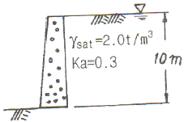
- 65t/m
- 5t/m
- 35t/m
- 13t/m
(정답률: 알수없음)
64. 3m×3m 크기의 정사각형 기초의 극한지지력을 Terzaghi 공식으로 구하면? (단, 지하수위는 기초바닥 깊이와 같다. 흙의 마찰각 20°, 점착력 5t/m2, 습윤단위중량 1.7t/m3이고, 지하수위 아래 흙의 포화단위 중량은 1.9t/m3이다. 지지력계수 Nc=18, Nγ=5, Nq=7.5이다.)
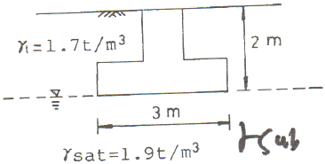
- 147.9t/m2
- 123.1t/m2
- 153.9t/m2
- 133.7t/m2
(정답률: 알수없음)
65. 그림은 확대 기초를 설치했을 때 지반의 전단 파괴형상을 가정(Terzaghi의 가정)한 것이다. 다음 설명 중 옳지 않은 것은?
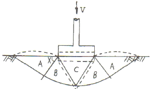
- 전반전단(General Shear)일 때의 파괴형상이다.
- 파괴순서는 C-B-A이다.
- A영역에서 각 X는 수평선과
 의 각을 이룬다.
의 각을 이룬다. - C영역은 탄성영역이며 A영역은 수동영역이다.
(정답률: 알수없음)
66. 다음 그림에서 한계동수경사를 구하여 분사현상에 대한 안전율을 구하면? (단, 모래의 Gs=2.65, e=0.65 이다.)
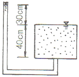
- 1.01
- 1.33
- 1.66
- 2.01
(정답률: 알수없음)
67. 압밀에 필요함 시간을 구할 때 이론상 필요하지 않는 항은 어느 것인가?
- 암밀층의 배수거리
- 유효응력의 크기
- 압밀계수
- 시간계수
(정답률: 알수없음)
68. 그림과 같은 실트질 모래층에 지하수면 위 2.0m까지 모세관영역이 존재한다. 이 때 모세관영역(높이 B의 바로 아래)의 유료응력은? (단, 실트질 모래층의 간극비는 0.50. 비중은 2.67, 모세관 영역의 포화도는 %이다.)
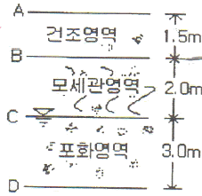
- 2.67t/m2
- 3.67t/m2
- 3.87t/m2
- 4.67t/m2
(정답률: 알수없음)
69. 어떤 흙에 대해서 직접 전단시험을 한 결과 수직응력이 10kg/cm2일 때 전단저항이 5kg/cm2이었고, 또 수직응력이 20kg/cm2일 때에는 전단저항이 8kg/cm2이었다. 이 흙의 점착력은?
- 2km/cm2
- 3km/cm2
- 8km/cm2
- 10km/cm2
(정답률: 알수없음)
70. 아래와 같은 흙의 입도분포곡선에 관한 설명으로 옳은 것은?
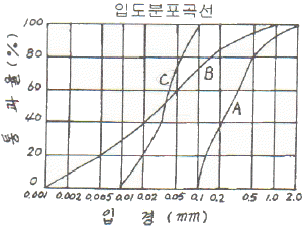
- A는 B보다 유효경이 작다.
- A는 B보다 균등계수가 작다.
- C는 B보다 균등계수가 크다.
- B는 C보다 유효경이 크다.
(정답률: 알수없음)
71. 다짐효과에 대한 다음 설명 중 옳지 않은 것은?
- 부착력이 증대하고 투수성이 감소한다.
- 전단강도가 증가한다.
- 상호간의 간격이 좁아져 밀도가 증가한다.
- 압축성이 커진다.
(정답률: 알수없음)
72. 점토지반에 제방을 쌓을 경우 초기안정 해석을 위한 흙의 전단강도를 측정하는 시험방법으로 가장 적합한 것은?
- UU-test
- CU-test
 -test
-test- CD-test
(정답률: 알수없음)
73. 모래시료에 대해서 압밀배수 삼축압축시험을 실시하였다. 초기 단계에서 구속응력(σ3)은 100kg/cm2이고, 전단파괴시에 작용된 축차응력(σdf)은 200kg/cm2이었다. 이와 같은 모래시료의 내부마찰각(ø) 및 파괴면에 작용하는 전단응력(τf)의 크기는?
- ø = 30°, τf = 115.47kg/cm2
- ø = 40°, τf = 115.47kg/cm2
- ø = 30°, τf = 86.60kg/cm2
- ø = 40°, τf = 86.60kg/cm2
(정답률: 알수없음)
74. 점토광물에서 점토입자의 동형치환(同形置換)의 결과로 나타나는 현상은?
- 점토입자의 모양이 변화되면서 특성도 변하게 된다.
- 점토입자가 음(-)으로 대전된다.
- 점토입자의 풍화가 빨리 진행된다.
- 점토입자의 화학성분이 변화되었으므로 다른 물질로 변한다.
(정답률: 알수없음)
75. 토립자가 둥글고 입도분포가 양호한 모래지반에서 N치를 측정한 결과 N=19 가 되었을 경우, Dunham의 공식에 의한 이 모래의 내부 마찰각 ø는?
- 20°
- 25°
- 30°
- 35°
(정답률: 알수없음)
76. 토질종류에 따른 다짐 곡선을 설명한 것 중 옳지 않은 것은?
- 조립토가 세립토에 비하여 최대건조단위 중량이 크게 나타나고 최적함수비는 작게 나타난다.
- 조립토에서는 입도분포가 양호할수록 최대건조단위 중량은 크고 최적함수비는 작다.
- 조립토 일수록 다짐곡선은 완만하고 세립토 일수록 다짐 곡선은 급하게 나타난다.
- 점성토에서는 소성이 클수록 최대건조단위 중량은 감소하고 최적함수비는 증가한다.
(정답률: 알수없음)
77. 보오링의 목적이 아닌 것은?
- 흐트러지지 않은 시료의 채취
- 지반의 토질 구성 파악
- 지하수위 파악
- 평판재하 시험을 위하 재하하면의 형성
(정답률: 알수없음)
78. 5m×10m의 장방형 기초위에 q=6t/m2의 등분포하중이 작용할 때, 지표면 아래 10m에서의 수직응력을 2:1법으로 구한 값은?
- 1.0t/m2
- 2.0t/m2
- 3.0t/m2
- 4.0t/m2
(정답률: 알수없음)
79. 연약점토 사면이 수평과 75° 각도를 이루고 있고, 이 사면의 활동면의 형태는 아래 그림과 같다. 사면흙의 강도정수가 Cu=3.2t/m2, γt=1.763t/m32이고, β=75°일 때의 안정수(m)는 0.219였다. 굴착할 수 있는 최대깊이(Hcr)와 그림에서의 절토깊이를 3m까지 했을때의 안전율(Fs)은?
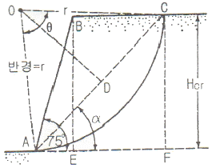
- Hcr:2.10, Fs=1.158
- Hcr:4.15, Fs=2.316
- Hcr:8.3, Fs=2.763
- Hcr:12.4, Fs=3.200
(정답률: 알수없음)
80. 점성토 지반의 개량공법으로 타당하지 않는 것은?
- 치환공법
- 침투압 공법
- 바이브로 플로테이션 공법
- 고결공법
(정답률: 알수없음)